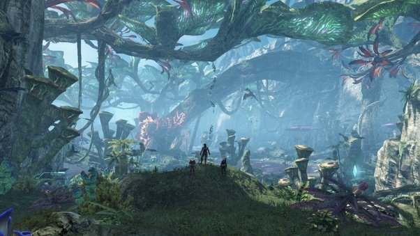
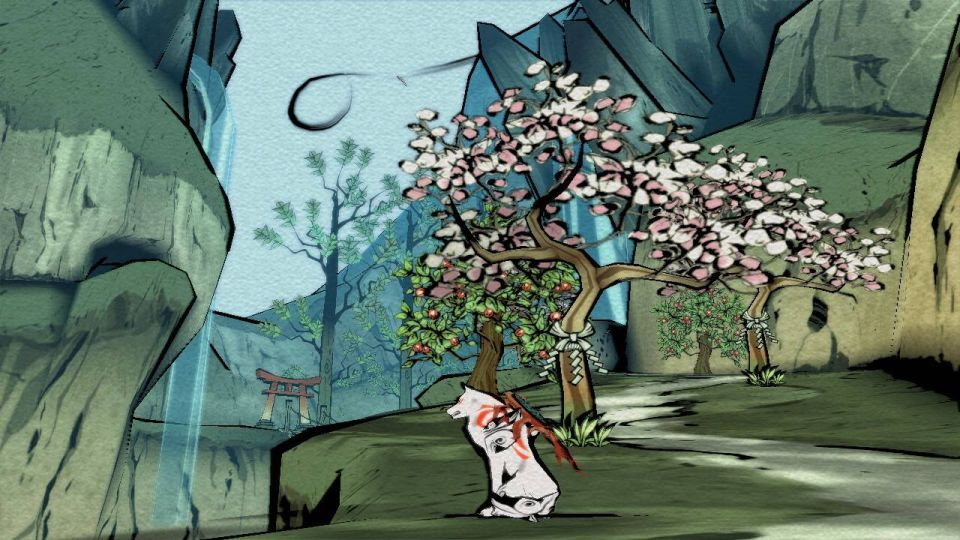
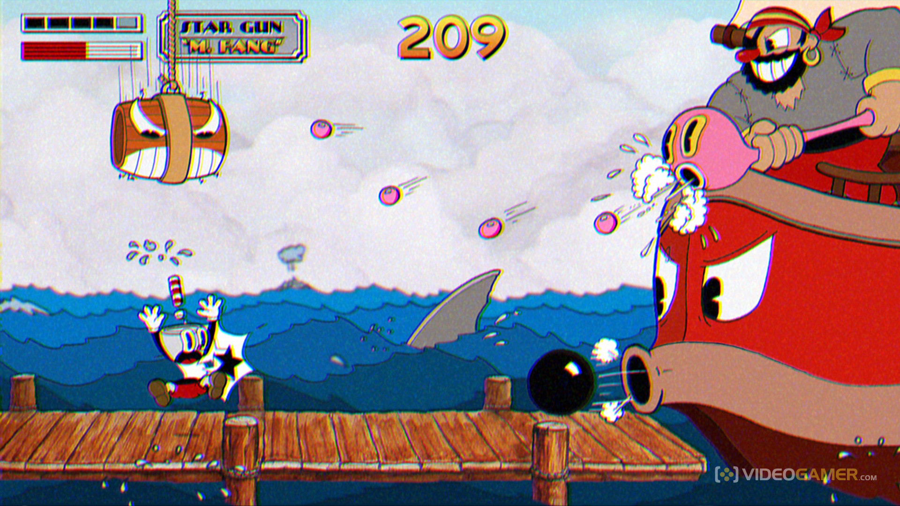
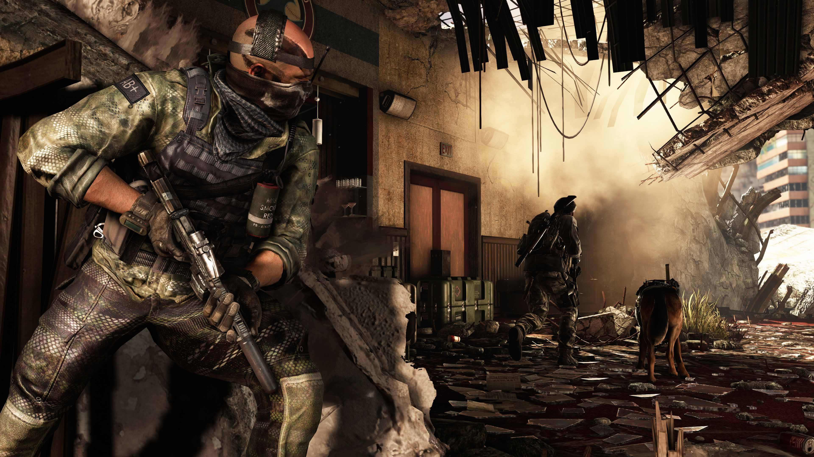

What Videogame Should You Play
What is your favorite genre?
Horror
Action
Comedy
Drama
Fantasy
Have you played videogames before?
Never in my life.
A couple of times.
I used to, but not as much anymore.
Pretty Often.
Every chance I get!
What would be your weapon of choice?
I have no need, all conflict can be avoided.
Something that lets me silently defeat my opponent before they notice me.
BIG, LOUD, AND DESTRUCTIVE!
Getting up close and personal. Fists, swords, bats, etc.
Spells and magic.
Which of these looks the most appealing?




How much time do you want to invest into the game?
As little as possible.
Maybe a couple of times a week.
I've got some time to spare.
Keep me well occupied.
Consume my life.
Submit
You should play...